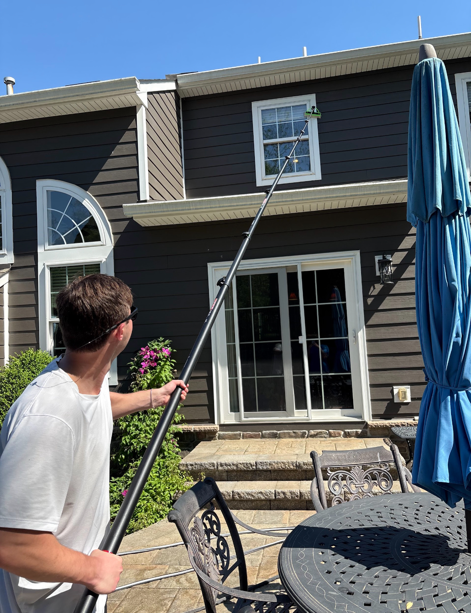

Our Services
Premium exterior and interior window care, solar panel cleaning, gutter cleaning, and soft scrubs for homes across Chester, Montgomery, Delaware, and Carbon counties.
Exterior Window Cleaning
Our exterior window cleaning service starts with glass, sills, frames, and tracks. We also clean garage door panes, sliders, storm doors, and skylights so every opening looks its best.
We use professional-grade equipment - including a water-fed pole system for higher windows - to deliver a streak-free finish without ladders on your property.

Interior Window Cleaning
Interior window cleaning is done with care around your furniture, flooring, and decor. We use microfiber cloths and professional cleaning solution to leave glass spotless and streak-free - no drips, no mess left behind.
Solar Panel Cleaning
Safe, streak-free solar panel cleaning that helps restore appearance while protecting your system's surface.

Gutter Cleaning
Gutter cleaning and debris removal to help keep water flowing properly and protect your home from clogs and overflow.
Soft Scrubs for Siding and Brick
Soft scrubs for siding, brick, and other exterior surfaces to remove dirt, mildew, and buildup without damaging your home’s finish.
Pricing
Pricing varies based on window type, number of panes, and whether the job includes interior and exterior work.
| Service | Pricing |
|---|---|
| Window cleaning | $11 - $15 per window depending on interior/exterior access, storm windows, and pane count |
| Screen cleaning | $5 per screen |
| Solar panel cleaning | $15 - $20 per panel |
| Gutter cleaning | $75 - $100 per side |
See the Difference
Watch how a professional window cleaning transforms a home's appearance.